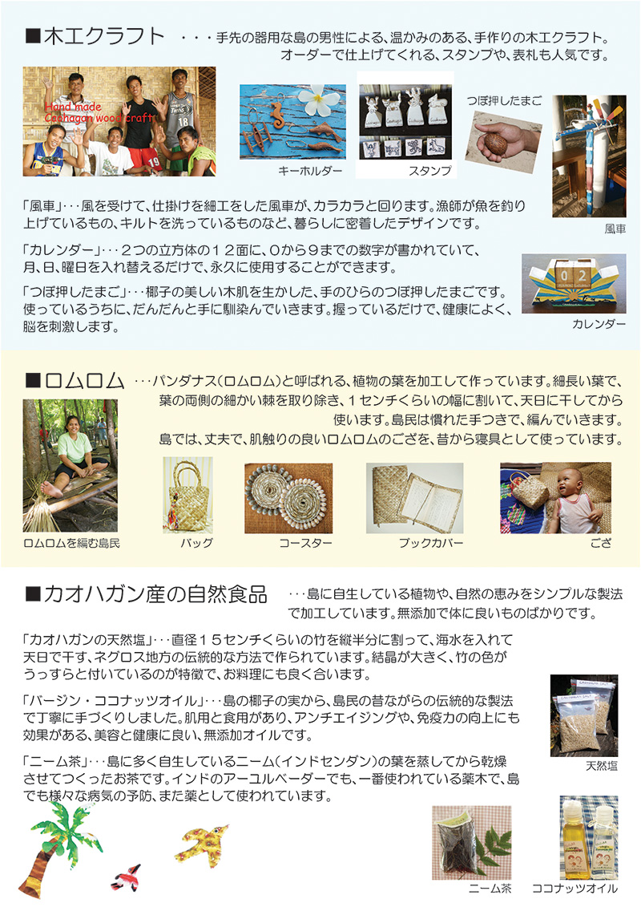
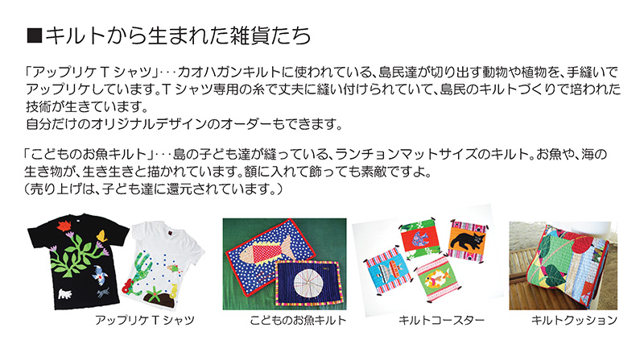
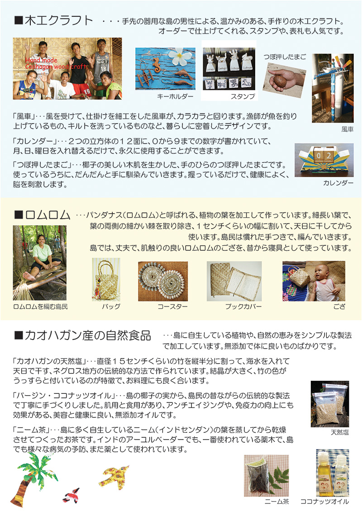
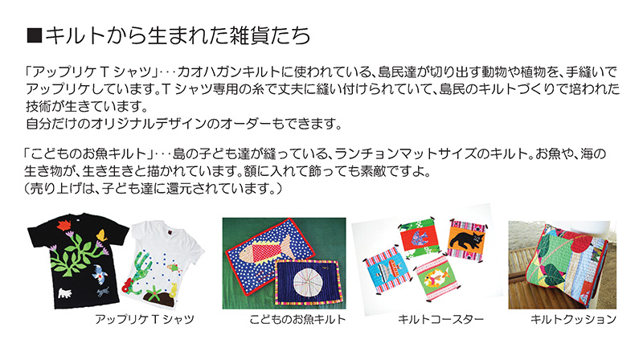

カオハガン島手作りクラフト、お土産の紹介
カオハガン島では、豊かな自然に囲まれ、心地よい風の吹く中で、様々なユニークなクラフトを制作しています。
そして、島民達の持続可能な自立を目指して、適切な利益を島民に還元するソーシャルビジネスを行っています。
ここで紹介したクラフト以外にも、貝を使ったアクセサリーや、ポストカードなど、様々なクラフトがあります。
現在、カオハガン島の宿泊施設やカフェにて販売をしています。



カオハガン島では、豊かな自然に囲まれ、心地よい風の吹く中で、様々なユニークなクラフトを制作しています。
そして、島民達の持続可能な自立を目指して、適切な利益を島民に還元するソーシャルビジネスを行っています。
ここで紹介したクラフト以外にも、貝を使ったアクセサリーや、ポストカードなど、様々なクラフトがあります。
現在、カオハガン島の宿泊施設やカフェにて販売をしています。
